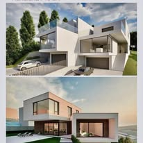
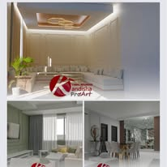
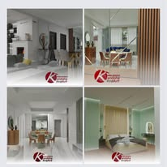
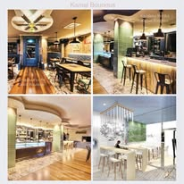
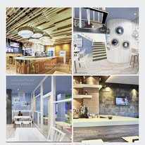
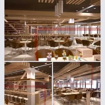
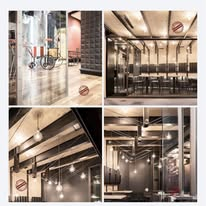
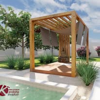
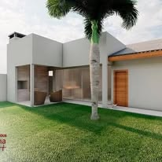

Proyectos
Viviendas, interiores y locales comerciales diseñados y modelados en 3D por el estudio.
Más proyectos









¿Tiene un espacio en mente?
Enséñenos el plano, unas fotos o solo la idea. Le diremos cómo lo abordaríamos.